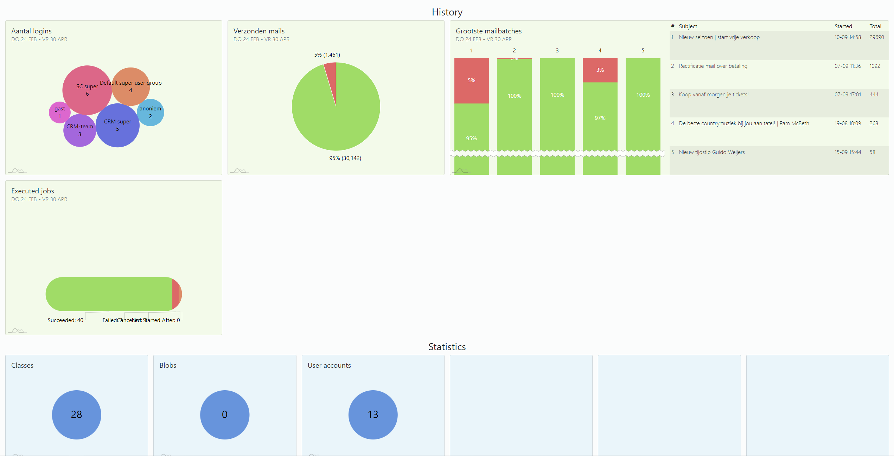
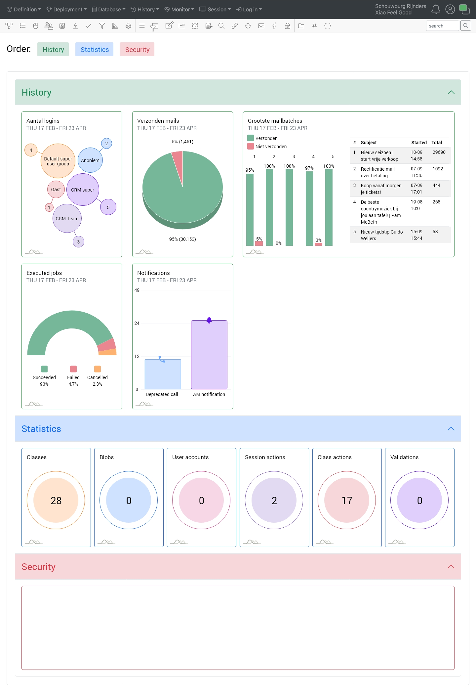

Portfolio werk
Het probleem
Er is een basis dashboard gemaakt. Kan dat dashboard er niet anders uit zien zodat het er beter naar voren komt?
De oplossing
Een nieuw design met toegevoegde onderwerpen voor het dashboard.
Thijs Rijnders had al een begin gemaakt van het dashboard met standaard design van Am Chart. Ik ga verder met Thijs zijn opdracht.
Om te beginnen ging ik kijken naar dashboards die gemaakt zijn met standaard bootstrap om beetje in die stijl te blijven. Want CrossmarX werkt met bootstrap. Daarna ging ik kijken bij de bootstrap componenten en kleuren. Voor de componenten, keek ik het meeste bij cards en accordion omdat bij een gesprek aan bod kwam wat er nog allemaal bij moest komen.
Het probleem
Er is een basis dashboard gemaakt. Kan dat dashboard er niet anders uit zien zodat het er beter naar voren komt?
De oplossing
Een nieuw design met toegevoegde onderwerpen voor het dashboard.
Thijs Rijnders had al een begin gemaakt van het dashboard met standaard design van Am Chart. Ik ga verder met Thijs zijn opdracht.
Om te beginnen ging ik kijken naar dashboards die gemaakt zijn met standaard bootstrap om beetje in die stijl te blijven. Want CrossmarX werkt met bootstrap. Daarna ging ik kijken bij de bootstrap componenten en kleuren. Voor de componenten, keek ik het meeste bij cards en accordion omdat bij een gesprek aan bod kwam wat er nog allemaal bij moest komen.
Wat heb ik geleerd?
Ik heb het design gemaakt op basis van het Bootstrap design omdat het bedrijf werkt met Bootstrap. Zo kon ik weer voelen hoe het is om te designen met een huisstijl. Verder heb ik geen nieuwe kennis kunnen gebruiken voor het gemaakte werk.
Wat er eerst was
Gemaakt werk
- Header: De header is er aan toegevoegd omdat dat er al standaards staat in he dashboard.
- Order: Het is een sleep button systeem zodat gebruikers zelf de order van het dashboard kunnen bepalen.
- History: Meeste dingen zijn het zelfde maar dan met net iets een andere vormgeving. Aantal logins en Excecuted jobs zijn erg verandert. Notifications is erbij gekomen. De card van elk gemeten data heeft een border.
- Statistics: Elk data item heeft een andere kleur.
- Security: Ik weet nog niet wat hier gedaan moet worden
Feedback
Ik heb mijn werk laten zien aan Tim. Hij zei: Werkt dit al? Ik zo: Nee dit is gemaakt in XD. Ik dacht: Als dit al werkt ben ik klaar met m’n opleiding.
- Order knoppen: Als je dat wilt slepen moet daar voor iets gebouwd worden. Wat als je er op klikt en je gaat naar die section
- Bij de security moet er tekst komen te staan van een warning met een knop om alle security dingen te zien.
Verbetering
Van de gegeven feedback heb ik het volgende gemaakt: